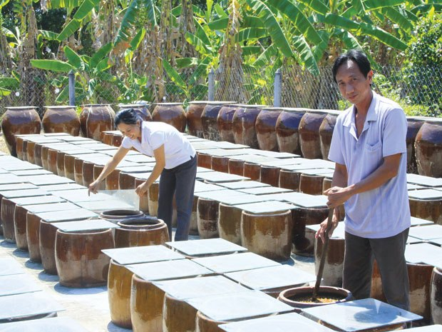
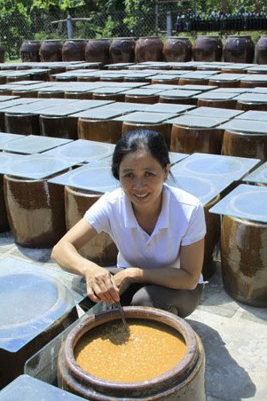
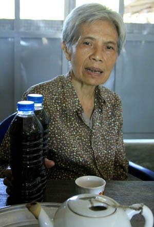

Tamari, MISO và một cách sống
22.04.2013Giữa làng quê Xóm Mảng (xã Tân Tây, Gò Công Đông) nhấm nháp trà tương và nghe dì Bảy Thạch (Trần Thị Ngọc Thạch), trên 60 tuổi, với tư cách người trong cuộc nói đến giá trị loại nấm xanh có tên khoa học Aspergillus Oryzae, làm cho nước tương nguyên dương Tamari và Misho vừa ngon vừa trị được bệnh… có thể bạn chưa tin, nhưng đối với dì Bảy Thạch đó là sự linh nghiệm.

Nước tương dòng tamari của cơ sở Thuần Chay ở ấp 7, xã Tân Tây, huyện Gò Công Đông, tỉnh Tiền Giang. Ảnh: Tấn Tới
Tưởng chừng Tamari, Misho chỉ tồn tại từ thời Kamakura, thế kỷ 13 – 14 hay Muromachi, cái thời đậu nành trở thành thực phẩm với nhiều cách chế biến phong phú sau khi vượt qua giới hạn nhà chùa, thậm chí trở thành nguồn dinh dưỡng quý phân phối cho binh lính từ thời Chiến quốc...
Cái duyên của thực dưỡng
6 – 7 thế kỷ sau, tại Xóm Mảng, công nghệ tạo và giữ gìn nấm xanh làm Tamari và Misho vẫn khéo léo và tinh tế. Đặc biệt, hầu hết người mặn mà với nước tương nguyên dương Tamari hay Misho đều có cùng điểm xuất phát là người có bệnh kéo dài, thậm chí bệnh hiểm nghèo tới mức bác sĩ khuyên “đưa về nhà, thích ăn gì cứ ăn đi!” Gia cảnh nghèo khó, không còn đủ sức theo đuổi ở các bệnh viện khiến cho sự chọn lựa phương pháp thực dưỡng như chuyện cầu may… Dì Bảy Thạch nhớ lại, lần đầu tiên, GS Georges Ohsawa (tên thật Nyoiti Sakurazawa) sang Việt Nam – năm 1965 ( tại 390 Điện Biên Phủ, TP.HCM), “ai cũng biết tới phương pháp gạo lứt, muối mè nhưng phần nền tảng của nó chính là thực dưỡng”. Một phương pháp biến nhiều loại thực vật thành thực phẩm có lợi cho sức khoẻ, điều đó ảnh hưởng tới cách sống chứ không chỉ là ăn uống.

“Tôi xin nghỉ việc ở bưu điện để tập trung nuôi bệnh cho mẹ. Lúc khó ăn, tôi cố nài mẹ ăn cháo với Tamari, Misho và tôi đã kéo dài thời gian sống tươi tỉnh cho mẹ. Tôi cũng đã nuôi chồng bị lao phổi mà không sử dụng biện pháp cách ly vì sợ chồng mặc cảm. Coi như ngày ngày tôi chung sống với vi trùng lao và có lẻ do kháng thể và phương pháp thực dưỡng đã tạo sức đề kháng đó”, dì Bảy Thạch tin như vậy.
Nước tương nguyên dương truyền thống
Hai vợ chồng anh Lê Kim Sơn – chị Lê Thị Ngọc Tuyết là nhân vật chính trong câu chuyện hai người cháu bị đau yếu kinh niên của dì Bảy Thạch (chủ cơ sở sản xuất nước tương Thuần Chay xã Tân Tây) nói: “Tôi nghỉ dạy về nuôi mẹ (89 tuổi) bốn năm không đi được. Hai năm mẹ tôi chỉ ăn cháo và Tamari. Tôi lại bị suyễn ba mươi mấy năm. Hễ trời trở gió là lúc nào cũng phải thủ chai thuốc xịt. Bác sĩ nói tôi phải sống mãn đời với nó. Ăn gạo lứt muối mè, dùng Tamari, mẹ tôi khoẻ hơn, kéo dài tuổi thọ và bản thân tôi hai năm nay không xài thuốc xịt Seretide evohaler nữa. Bà xã tôi hễ mùa gió chướng là ho hoài, thận ứ nước, nhờ theo phương pháp này tới nay không uống thuốc nữa”.
Ông Sơn dành một khoảng sân rộng mấy trăm mét vuông sau nhà để ủ đậu nành làm Tamari và Misho. Hé mở tấm kính làm nắp đậy, mùi nước tương Tamari thơm lắm luôn. Hiện nay, cơ sở Thuần Chay cung cấp cho thị trường “thực dưỡng”, tuy không đa dạng như dì Bảy Thạch (làm Tamari ngâm tỏi, Misho, chanh muối…) nhưng với nhãn hàng đã đăng ký bảo hộ, xuất xứ hàng hoá rõ ràng… anh có nguồn thu ổn định hơn.

Dì Bảy Thạch cho biết, người nào theo phương pháp thực dưỡng đều ốm, nói ốm mà khoẻ thì không ai tin. Sự chọn lựa một cách sống, ăn uống đạm bạc đã giúp tinh thần thoải mái. Người theo thực dưỡng, có một anh giỏi ngoại ngữ đã tự nguyện dịch sách của GS Ohsawa chia sẻ kiến thức với bạn đọc. Mỗi năm tới ngày giỗ GS Ohsawa, nhiều nhóm thực dưỡng mời người khỏi bệnh tới nói chuyện. Những người tin vào phương pháp này đã ngồi lại chia sẻ, trong đó không ít người rành rẽ về tây y.
“Nước tương nguyên dương được làm theo công nghệ truyền thống khá phức tạp, để trên ba năm có tác dụng cải thiện sức khoẻ tốt do sự chuyển hoá các enzyme. Người ta nói công dụng đó nhờ giá trị nguyên dương (phơi ngoài nắng)”, ông Sơn nói tiếp: “Nếu không tin thì người dùng cũng yên tâm đó là loại sản phẩm an toàn”.
Nhiều công ty ở Nhật đang tìm đối tác trồng đậu nành, gạo dẻo với hàm lượng protein không cần cao như gạo Việt Nam để cung ứng cho dây chuyền làm Misho ở Nhật. Có thể họ không ngờ giữa một vùng quê (ấp 7, xã Tân Tây, huyện Gò Công Đông, Tiền Giang) lại có làng làm Tamari và Misho đúng điệu Nhật Bản tồn tại cùng một cách sống đạm bạc hơn nửa thế kỷ.
BÀI VÀ ẢNH: HOÀNG LAN
Sài Gòn Tiếp Thị
- Nước tương Nhật vẫn chậm tiến
- 16.08.2013
- Lạc vào xứ thần tương
- 14.08.2013
- Tamari, MISO và một cách sống
- 22.04.2013
- Nước tương dưỡng sinh Tamari nguyên dương
- 10.07.2010